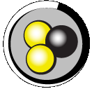

Help for DC++

Documentation
Changelog
This page contains everything that has changed in the history of DC++.
Read this to find out about features that are poorly or not documented
at all. You'll also find all the people that have contributed code to
DC++ here.
Etiquette for Direct Connect usage
You may not agree with everything in this page, but reading the advice
never hurts. The page outlines some simple guidelines that make the use
of the Direct Connect Network more enjoyable for everyone.
Chat and Private Message Commands
These are the commands that are available in chat, private messages, or
both. They offer handy keyboard shortcuts to functions in the graphical
interface. Some commands have no graphical counterpart.
Credits
View the credits and license of this help file.
Windows
Frequently Asked Questions
Settings
Development